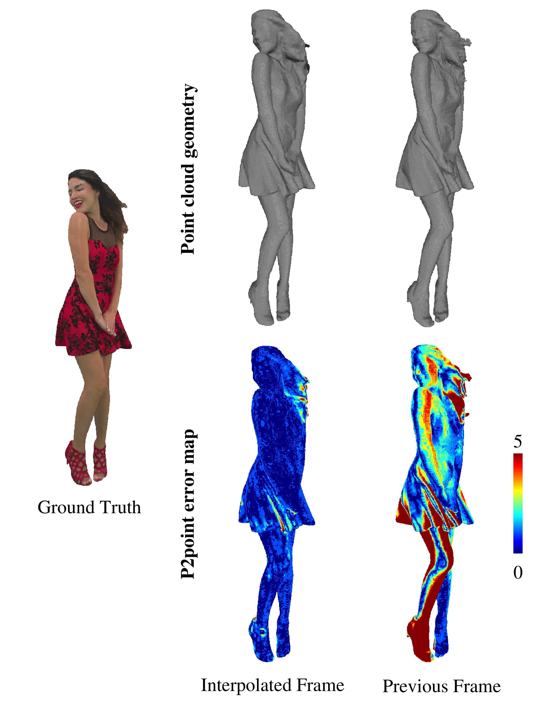
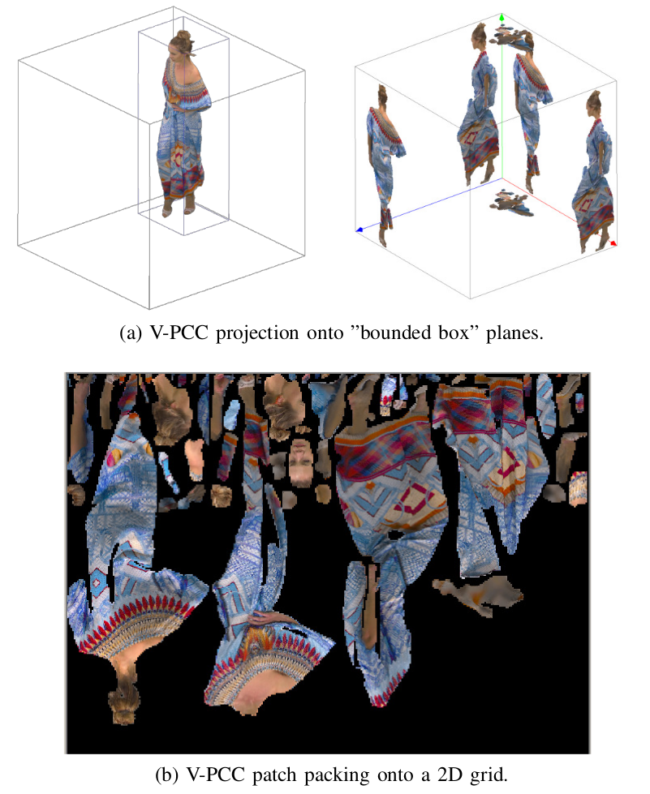
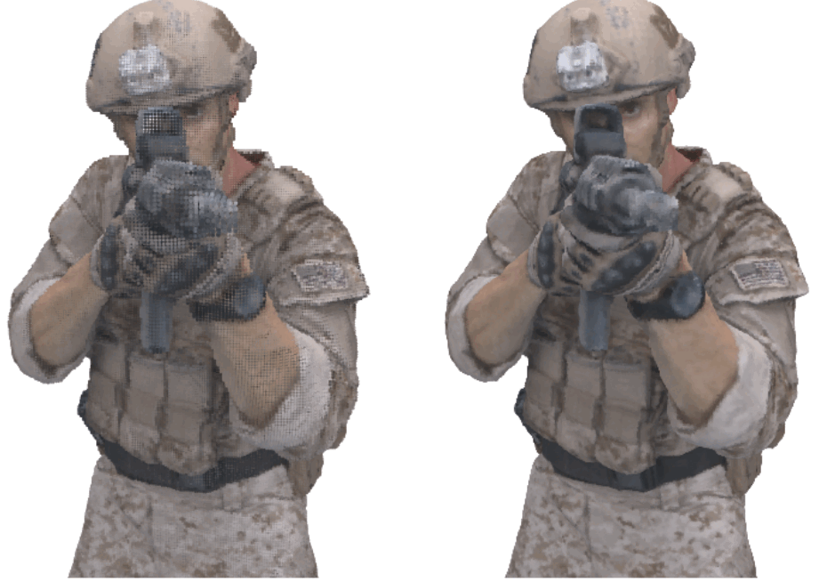
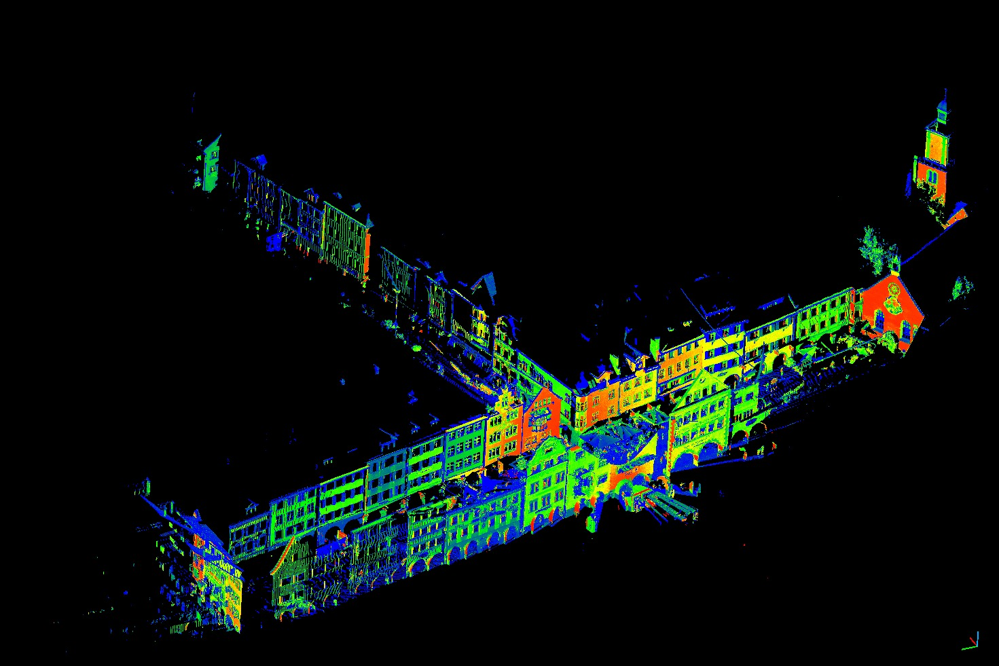
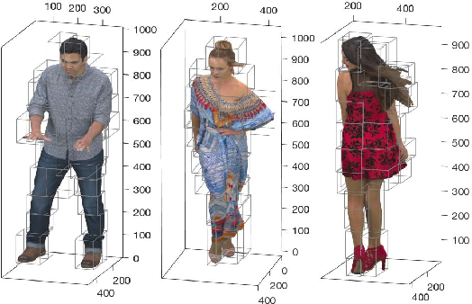

|
Project Work
 |
Inter-prediction in Point Cloud Compression with Sparse Convolutional Networks
Internship work at Qualcomm.
Deep learning solution for inter-frame compression of high resolution point clouds.
Proposed I, B, and P-frame encoding framework.
|
|
 |
Dynamic Point Cloud Interpolation. (pdf)
Internship work at Qualcomm.
Deep learning-based point cloud interpolation framework for photorealistic dynamic point clouds.
Given two consecutive dynamic point cloud frames, the framework aims to generate intermediate frame(s) between them.
|
|
 |
Video-based Point Cloud Compression (V-PCC) Artifact Removal. (pdf)
Summer Internship work at Tencent.
Video-based Point Cloud Compression (V-PCC) standards introduces quantization at lower bitrate resulting in artifacts in the reconstructed point cloud.
We propose a deep learning-based V-PCC artifact removal framework.
We exploit the prior knowledge of the direction of quantization noise in V-PCC to learn both the direction as well as level of quantization noise by limiting the degree of freedom of the learned noise.
|
|
 |
Point Cloud Geometry Prediction Across Spatial Scale. (pdf)
Summer Internship work at Tencent.
We propose a deep learning solution for point cloud geometry prediction scheme to upsample a lower Level-of-Detail (LoD) point cloud into a higher LoD point cloud.
We employ an octree-type upsampling solution to predict geometry across spatial scale.
|
|
|
2D Penoptic Segmentation on street level imagery (SLI) from HERE True Drives.
Summer Internship at HERE Technologies.
2D Building Facade Segmentation and Portal Detection.
2D Building Tracking, Segmentation, and Instant Segmentation.
|
 |
Point Cloud Denoising.
Point clouds obtained from 3D scanners or by image-based reconstruction techniques are often corrupted with a significant amount of non-negligible noise.
We propose a two-stage deep neural network that takes in 3D point cloud data and outputs a denoised point cloud.
1st stage: Outlier removal.
2nd stage: Denoising surface noise.
We achieve state-of-the-art point cloud denoising results.
(Noisy point cloud on the left, Denoised point cloud on the right. JPEG 8i dataset)
|
|
 |
3D Semantic Segmentation on HERE True LiDAR Data.
Summer Internship at HERE Technologies.
Annotation of large scale outdoor LiDAR point cloud data.
Building Deep Learning Architecture for 3D Semantic Segmentation.
Feature abstraction from segmented 3D Point Cloud Data.
(Image on the left is from Semantic3D Dataset.)
|
|
 |
Service-Oriented Robotic Simulation Implementation.
(August 2008 - February 2010) - ENSIBS + Lab VALORIA UBS FRANCE)
Robotics Studio allows developers to develop robotic applications which manage the sensors, actuators, and
the behavior of robots in their environment. The same application code is used both in the simulated robots
in a simulation environment and in real robots in real world environment. It has a Service-Oriented Architecture
(SOA), with services being designed and developed by Visual Programming Language (VPL) and direct
Visual C
Project description:
This project develops robotic simulation agents in Robotics Studio.
The application developed consists of the core specifications, these core specifications were developed by
following the Gaia multi-agent method.
There were several extensions developed of these specifications.
It manages the transport of goods between multiple warehouses in a closed environment.
The entities are mobile carrier agents, the loaderun-loader agents that loadun-load goods at warehouses.
The environment consists of the route (with its topology) and the goods to transport.
The mission consists of transporting all or a part of goods from one source (warehouse) towards a destination (warehouse).
The carrier agents discover the route topology and must construct and follow a route to reach their destination.
The project extensions implement the simulation scenarios, and then thus validate the specifications.
The extensions are:
The scalability of the number of carrier agents. We started from a static solution where we knew the number
of carrier agents at start, to a dynamic solution which allows the dynamic addition and removal of carrier agents
either with the help of a supervisor (HMI), or with the help of a service that allows the adaptation of the
number of carrier agents.
The evolution of the route. We passed from a solution where the topology of the route is known at the
beginning to a solution where the topology of the route evolves dynamically with the help of addition/deletion
of discrete portions of route with the help of a supervisor service.
The evolution of the number of the warehouses and mission. We pass from a solution where the number of
warehouses are static (i.e. known in advance) and the mission consists of transporting a part or all the goods
from one warehouse to another warehouse, to a solution which allows to introduce new warehouses
(placed at different portions of route via a supervisor service) and modification of carrier agent missions
to assure an equilibrium between the warehouses (i.e. our goal is the same quantity of goods in each warehouse)
The proposition of a strategy for the resolution of collisions between carrier agents.
|
|
|
Approach for the formal specification and verification of multi-agent robotic systems.
(PhD Project - July 2007 - September 2010 - Lab VALORIA UBS FRANCE)
We have proposed a development approach based on a combination of methods and techniques that allow
for formal verification and evaluation during specification definition and that is also flexible.
We have analyzed the development process of a robotic multi-agent system after classifying it in the
major phases of requirement specifications, verification specifications, architecture specifications,
and implementation.
|
 |
An Architecture for Secure Video Streaming in Multicast environment
(The Islamia University of Bahawalpur - 2012)
|
 |
Design and development of a formal multi-agent information management system.
HEC Grant 0.5 Million - Duration 10 months - (November - 2012)
Application of formal methods for the development of multi-agent based information management system
Design and development of a formal architecture for the Information management system
Implementation of this Information management system by using a multi-agent framework
The use of free open source multi-agent platform and softwares.
|
 |
Luddo 3D - Design and development of 3D Ludo gameLuddo 3D - Design and development of 3D Ludo game.
(August - 2013)
Luddo is very popular game in Pakistan. Internationally and nationally people play this game for entertainment.
Usually a square board, dice and some tokens are used in order to play this game.
We proposed an electronic version of the game in order to modernize the experience of playing Luddo game
in computers and smart phones. Four, three, or two players can play this game at a time.
We have proposed a single player gaming experience also; developed the electronic game and added
functionality of playing game with the computer player;
Moreover we have developed a Luddo game in a 3-Dimensional graphic environment using a 3D-graphics engine.
We are the first team to developed this 3D-Luddo game across the world.
|
|